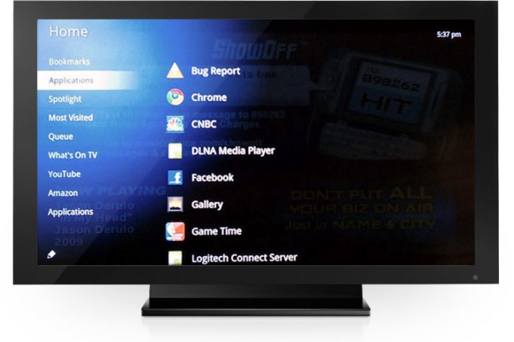

Google wants to avoid a sharp distinction between Web content and traditional television from cable or satellite. When you search for a show in Google TV you see options for television and Web, the latter option taking you to a screen that lists all online episodes and sources, including Hulu, Amazon and Netflix. You can always jump back into live TV with the press of a button.
Flash Support
The obvious application for Flash is Web video, but Google promises that Flash support will allow Google TV to play games such as Farmville and streaming music sites such as Pandora. Unfortunately Google didn't demonstrate these applications, so we'll have to see whether they work as promised.
One Remote
Demonstrators used big keyboards to navigate Google TV, and stressed that only one input device will be necessary. It's not clear what the actual remotes will look like, but I'll bet Logitech and Sony will have their own designs.
Talks to Android Phones
Google TV has a couple features specifically for Android phone owners: Instead of typing in television search queries, you can dictate them into the phone, and the request is sent to the television by Wi-Fi. Also, if you're watching a video on the phone, you can send it to the television.
Android App Support
In addition to tapping the Web for content, Google TV will work with any Android app that doesn't use phone features. Google only showed Pandora as a demonstration, but hopefully games and other media will run smoothly on the big screen.
The Hardware
Televisions equipped with Google TV technology will have Ethernet and Wi-Fi capabilities. One-click DVR recording will be available on boxes from the Dish network, another partner announced Thursday. There's no word on pricing or specific products. Sony says it plans to offer Google TV on some of its Bravia TV sets as well as Blu-ray players. Google says those who want to add Google TV to existing television sets will be able to buy a Google set-top box called a Buddy Box that will bring the service to any TV. Here is a short video from Google introducing Google TV.